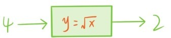

除了这两类函数外，我们再介绍一种新的函数。前面提到，正方形的面积S是完全由边长a确定的。反过来，面积也可以确定边长，面积为9平方厘米的正方形边长是3厘米，面积为0.01平方厘米的正方形边长是0.1厘米。
更一般地，对于任何非负实数x，总存在一个非负实数y，使得y2=x，我们将这个非负实数y记作，称为x的算术平方根，-的平方也等于x，我们将和-统称为x的平方根。比如2，-2都是4的平方根，而其中2是算术平方根。算术平方根的一个基本性质是两个非负实数的算术平方根的乘积会等于乘积的算术平方根
由算术平方根可以引入一个新函数，平方根函数y=。面积为S的正方形边长就是a=。

注意，如果在平方根函数中输入负数，函数机器就会“死机”，因为根据负负得正法则，对负数x没有意义了。在这里，不少读者可能会问：
问题47：为什么每个非负实数都会有一个算术平方根？
例如，真的会有一个正实数，它的平方等于2吗？因为12<2<22，所以这个数如果存在，一定会介于1与2之间。简单计算会发现1.42<2<1.52，所以会介于1.4与1.5之间，进一步的计算又表明会介于1.41与1.42之间……不停地计算会得到一个确定的小数=1.41421…，类似的计算也会得到=2.23606…，1.52752…。
这就给出了问题的一个初步说明，更完整的回答和问题26一样需要用到严格的实数理论，已经超出了初等数学的范畴。不过在下一章会给出这个问题的一个几何解释。
问题还没彻底解决，新的问题又来了，=1.41421…是有限小数还是无限小数？如果是无限小数，那是循环还是不循环？我们知道有限小数和无限循环小数都是有理数，而无限不循环小数不是有理数，所以，这个问题也可以这样问：
问题48：是不是有理数？
接下来要用反证法严格地证明不是有理数。假设是有理数
其中m与n是正整数。不断约分后，还可以进一步假设是既约分数。将等式两边平方，再同时乘上n2，得到
2n2=m2。
所以m是偶数，可以设m=2k，代入上面等式后，得到n2=2k2。所以n也是偶数。但是m和n都是偶数与是既约分数是相矛盾的。所以原先的假设不成立，不是有理数。
现在已经知道=1.41421…不是有理数，但是新的问题又来了，呢，呢？更一般地，会有这样一个问题：
问题49：对于哪些正整数n，不是有理数？
我们将这个问题留给读者探索，再回到。虽然前面证明了不是有理数，但是如果我们让参与到有理数的加减乘除运算中，会产生哪些新的数呢？首先会想到的是形如a+的实数，其中a，b都是有理数，例如1-，，，…因为不是有理数。所以不等于0，除非a，b等于0。
这种类型的数，任意取两个相加减，或者相乘，得到的还是这种类型的数，例如=ac+2bd+(ad+bc)。更惊奇的是，每个这种类型的非零实数的倒数也是这种类型的。根据平方差公式，=a2-2b2，因此=1。所以又得到了一个算术系统，由所有形如a+的实数，及其加减乘除运算构成，其中a，b都是有理数。这个算术系统也满足有理数算术系统的5条基本性质，它是一个比有理数算术系统更大，但是比实数算术系统小的算术系统，称其为算术系统。注意在算术系统中，所有形如m+的数（m，n都是整数）和所有整数一样，满足整数算术系统的4条基本性质。
问题50：除了算术系统外，还有哪些介于有理数与实数算术系统之间的算术系统？
提问时间
3.8.1 比较和的大小。
3.8.2 化简和。
3.8.3 证明：若a>b≥0，则>。